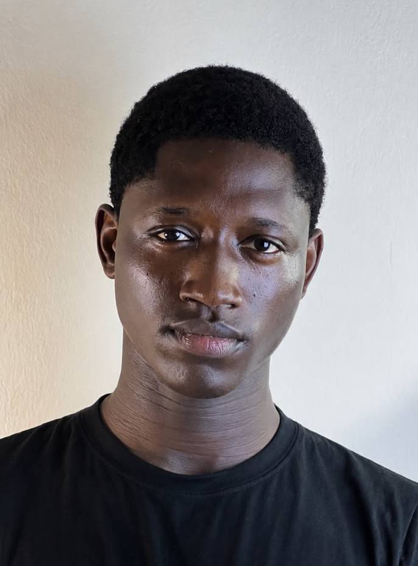

Independent editor · Abuja, Nigeria
I make videos
worth watching.
I help creators turn ideas, footage, and rough cuts into short-form stories that earn attention and keep it.
Currently taking on select projects
Editor / storyteller

Play
with
purpose
with
purpose
Selected work
A few things
I’ve shaped.
Short-form edits built around a clear idea, a considered pace, and the small details that make a viewer stay.
The difference
Good editing is
felt, not noticed.
01
Fast turnaround
Clear communication and a reliable process that keeps your content moving.
02
Retention focused
Every cut, caption, and beat has a job: make the next second irresistible.
03
Creative storytelling
Strong ideas become stronger when the edit gives them room to land.
04
Sharp details
Polished sound, rhythm, color, and motion that quietly raise the whole piece.
Have a story in mind?